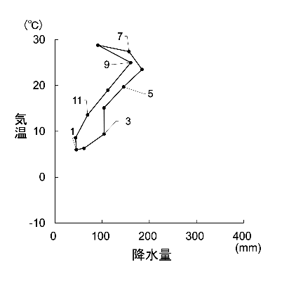
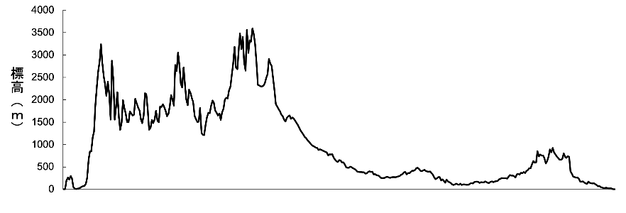
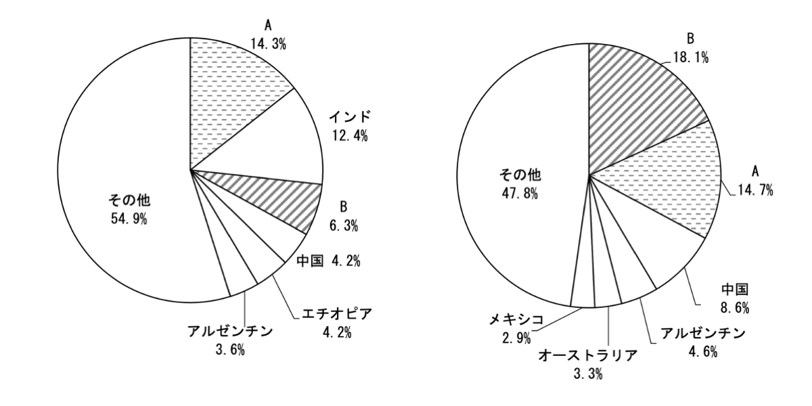
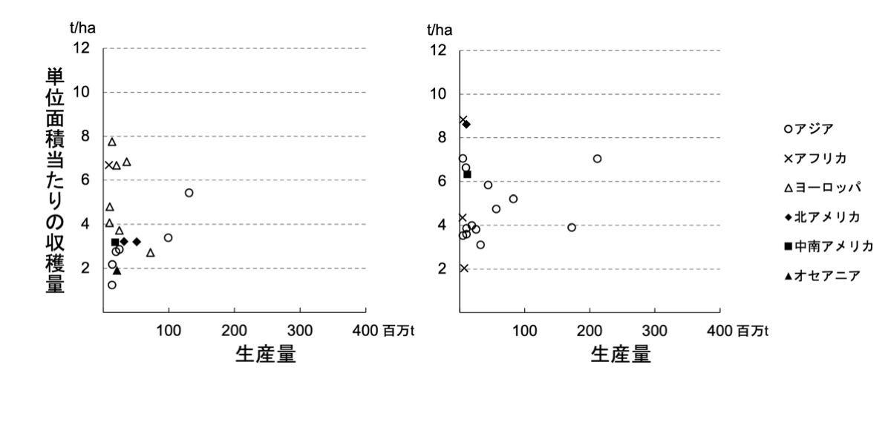
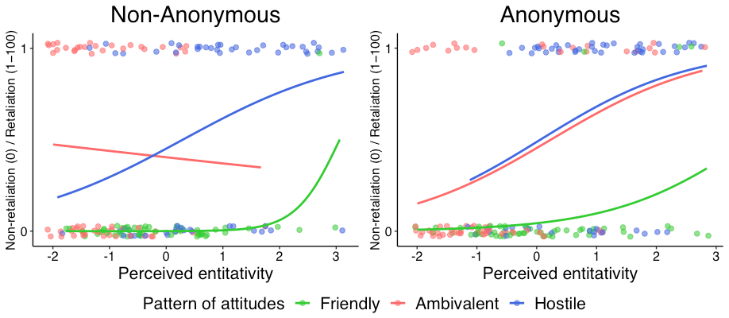
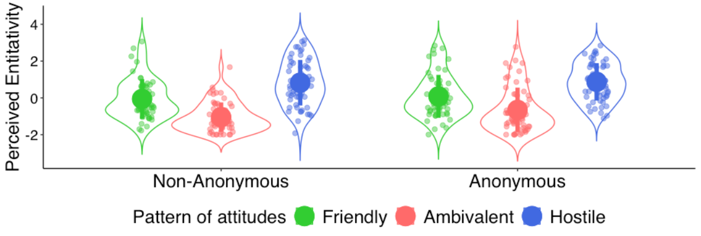

text text text text text text text text text text text text text text text text...
ハイサーグラフ

text text text text text text text text text text text text text text text text...
地形断面図

谷謙二研究室「Web地形断面図メーカー」によるデータを使用
グラフ加工用Excelシートを開発・提供 text text text text text text text...
牛の頭数または牛肉の生産量

牛の頭数または牛肉の生産量のいずれか また図中A・Bはアメリカ合衆国またはブラジル 統計年次は2018年 『世界国勢図会 2020/21年版』より作成 text text text text text text text...
米または小麦の単位面積あたり収穫量（地域別）

地域別の単位面積あたり収穫量。図は米と小麦のいずれか 統計年次は2018年 『世界国勢図会 2020/21年版』より作成 text text text text text text text...
Graphs by ggplot2 (R programmig) ①

Plot results and fit models on logistic function
text text text text text text text text text
text text text text text text text text text
text text text
Graphs by ggplot2 (R programmig) ②

show results by violin plot
text text text text text text text text text
text text text